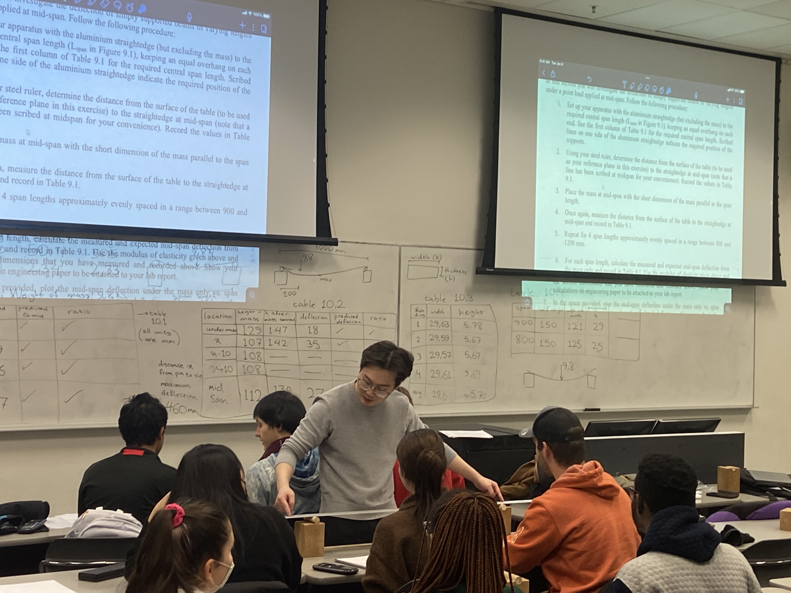

About Me
Welcome to my personal website! I am Jiangyu Zeng, a PhD candidate in the Department of Civil Engineering at the University of Alberta. My research focuses on developing innovative approaches to structural health monitoring using crowdsensing technologies and big data analytics.
I am currently working on my doctoral dissertation titled "A Crowdsensing-Enabled Population-Based Structural Health Monitoring (CE-PBSHM) Framework Using Drive-by Measurements." This research aims to develop a scalable model for simultaneous multi-bridge monitoring, representing a significant advancement in infrastructure monitoring technologies.
My work combines traditional civil engineering principles with cutting-edge technologies including machine learning, computer vision, and big data analytics to create more efficient and comprehensive infrastructure monitoring solutions.
Research Interests
- Structural Health Monitoring
- Crowdsensing Technologies
- Machine Learning Applications
- Computer Vision
- Big Data Analytics
- Infrastructure Management
Education
Ph.D. in Civil Engineering
Candidacy Exam Completed: "A Crowdsensing-Enabled Population-Based Structural Health Monitoring (CE-PBSHM) Framework Using Drive-by Measurements"
M.Sc. in Civil Engineering
Focus on imaging-based analysis and computer vision applications in civil engineering
B.Sc. in Civil Engineering
Developed foundational knowledge in civil engineering with early exposure to research through undergraduate research assistantship
Research Experience
PhD Research: Crowdsensing-Based Structural Health Monitoring
Developing a scalable model for simultaneous multi-bridge monitoring using crowdsensing and big data analytics. This research represents a paradigm shift from traditional single-structure monitoring to population-based infrastructure assessment.
M.Sc. & Undergraduate Research: Imaging-Based Analysis and Computer Vision
Developed and applied machine learning and computer vision techniques for infrastructure monitoring, including pavement condition assessment and crack detection in concrete structures.
Lab Safety Associate
Ensured lab safety and protocol compliance during structural health monitoring experiments, managing laboratory equipment and coordinating experimental activities.
Research Assistant
Assisted in developing machine learning models to improve the accuracy of structural health assessments, gaining early experience in applying computational methods to civil engineering problems.
Publications
A Drive-By PBSHM Framework for Bridge Damage Detection Under Temperature Variability
This paper presents a drive-by population-based structural health monitoring framework that detects bridge damage while explicitly addressing temperature-induced variability in structural response.
Multi-Bridge Inference Structural Health Monitoring (MISHM): A Drive-By Crowdsensing Approach at the Network Level
This paper presents a novel framework for monitoring multiple bridges simultaneously using crowdsensing technologies and drive-by measurements.
Multi-Bridge Indirect Structural Health Monitoring: Leveraging Big Data and Drive-By Crowdsensing Techniques
Conference proceedings paper discussing the application of big data techniques in bridge monitoring using indirect measurement approaches.
An imaging-based artificial neural network method to identify the international roughness index of highway pavements
This study presents a novel approach to assess pavement roughness using imaging techniques and artificial neural networks.
Deep learning-based crack detection in a concrete tunnel structure using multispectral dynamic imaging
Application of deep learning techniques for automated crack detection in concrete tunnel structures using advanced imaging methods.
Heat loss detection using thermal imaging by a small UAV prototype
Investigation of thermal imaging applications using unmanned aerial vehicles for building energy efficiency assessment.
Teaching Experience
Teaching Assistant
Courses: Civ E 130 (Present), Civ E 270, Civ E 265, Civ E 398, Civ E 779
Assisted with various undergraduate and graduate courses, providing student support, grading assignments, and conducting tutorial sessions.
Lab Instructor
Course: Civ E 270 - Mechanics of Deformable Bodies
Conducted laboratory sessions, demonstrating the practical applications of theoretical concepts in mechanics of materials and structural analysis.
Photo Gallery
A collection of photos from my teaching, research, and conference activities.

Teaching Linear Algebra
Presenting matrix determinants and invertibility concepts to undergraduate students.

Classroom Instruction
Engaging with students during a mathematics lecture at University of Alberta.

Laboratory Instruction
Providing hands-on guidance to students during engineering lab sessions.

Research Presentation
Presenting research findings at an academic conference on structural health monitoring.
Achievements & Awards
Technical Skills
Programming Languages
Engineering Software
Data Analysis & ML
Research Areas
Contact Information
Office Address
Department of Civil Engineering
University of Alberta
Edmonton, Alberta
Canada
jiangyu1@ualberta.ca
Phone
+1 (204) 869-7738
Professional Activities
Volunteer Experience:
- Orientation Ceremony Volunteer, Civil Engineering, University of Alberta (September 2023)
- Mentor, Mentor and Mentee Program, University of Manitoba (2018 Academic Year)
Research Collaborations
Active collaboration with interdisciplinary teams integrating crowdsensing technologies with traditional structural monitoring approaches.